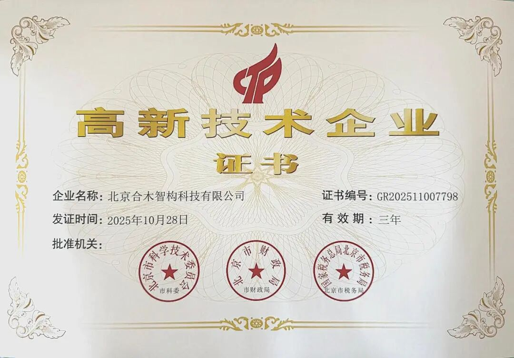
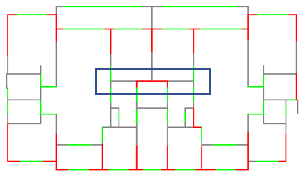
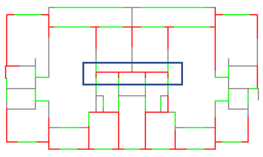
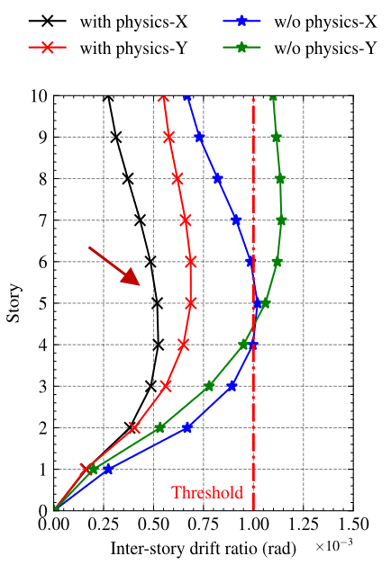
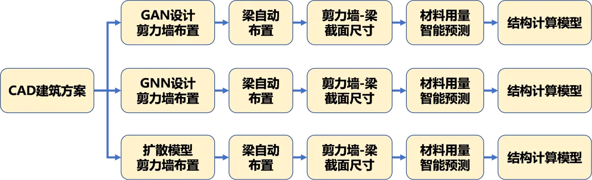
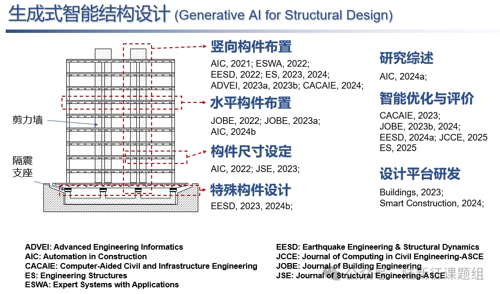

合木智构喜提“国家高新技术企业”认证！
近日，北京合木智构科技有限公司（AI-structure Copilot 的研发团队）正式通过国家高新技术企业认定！
“国高新”认证不仅是对我们技术实力和创新成果的权威认可，也是对我们坚持“AI+工程设计”路线的莫大鼓励。这份荣誉，离不开每一位使用 AI-structure Copilot 的工程师。正是您在4000多个真实工程项目上的应用与反馈，帮助我们将这款“会干活的AI”逐步打磨成“更懂工程的搭档”。在此，我们向所有用户致以最诚挚的感谢！

荣获“国高新”认定，是我们前进的新起点。回顾过去一年，AI-structure Copilot 围绕工程师的核心需求，在多个方向上持续迭代与升级：
1
识图能力跃迁：攻克CAD图纸前处理难题
针对工程师反馈的“CAD图纸图层不规范、前处理繁琐”等痛点，V0.4.0版本引入深度学习算法，推出了“智能识图”功能，一键识别门窗、阳台等构件信息，效率大幅提升，帮助您轻松应对复杂图层。
构件智能识别操作视频
2
算法升级，更省更合规
最新的V0.4.2版本迎来了剪力墙设计算法的重大升级。我们推出了新的“实验室版”生成式算法，针对性强化了“结构地震变形约束条件” 。实际测试表明，新算法不仅显著提升了“地震变形指标”通过率，同时在材料用量上也有一定程度的降低。

a. 此前算法A的智能设计结果

b. 实验室版算法的智能设计结果

c. 层间位移角对比
图1 实验室版本算法与算法A的比较
3
全平台兼容（Revit + 中望 + AutoCAD）
兼容Revit：2025年12月重磅上线！随着BIM需求逐渐加大，我们推出了专为Revit定制的接口，支持剪力墙智能设计及三维展示，让您的BIM设计更加高效。
兼容Revit平台操作视频
兼容中望CAD：响应国产化需求，我们为中望CAD用户提供专属AI助手，让您无论使用AutoCAD还是中望CAD，都能享受一致的智能设计体验。
兼容中望平台操作视频
4
适配新规，引导新手
适配新国标：v0.3.5 版本针对“3米层高”的住宅新规 ，通过重新训练AI模型，显著提升了结构设计的力学性能合规率。
交互式引导：V0.4.1 版本增加了交互式案例引导功能，帮助新用户在5分钟内快速学会智能设计和结构分析等核心操作，让AI不再有门槛。
交互式案例引导操作视频
5
功能拓展至建筑平面布置一键搞定
建筑户型平面生成与编辑平台：专注于建筑户型空间的智能化划分，融合了大语言模型（LLM）等前沿技术，辅助建筑师实现对平面布局的深度理解、自动生成与精准编辑。
HouseMind操作演示视频
建筑户型平面生成与3D展示平台：实现户型平面生成与 3D 展示一体化，快速完成用户抽象需求到建筑实体空间的转化，提供高效直观的建筑设计数字化解决方案
ChatHouseDiffusion操作演示视频
“国高新”的荣誉，属于每一位与合木智构同行的工程师。
感谢大家陪我们一同探索“AI+工程设计”的广阔前景。未来，我们这支“持证”的AI团队，将继续精研算法，努力让结构设计“更快、更稳、更合规”。
“欢迎大家持续关注我们的工作，多多支持！”——这句话在我们的往期推送中反复出现 ，这代表了我们最诚挚的期盼！
（附：软件下载及试用地址：https://ai-structure.com/#/IntelligentDesign)

温馨提示：为更好使用AI设计工具，请仔细阅读使用说明书(https://ai-structure.com)。
QQ群
AI-structure-交流1群：741840451（已满）
AI-structure-交流2群：1053974604（欢迎加入）
商务问题请联系：
黄盛楠(huangshengnan@mail.tsinghua.edu.cn)
技术问题请联系：
廖文杰(liaowj17@tsinghua.org.cn)
AI-structure Copilot v0.4.4：安装更省心 + 校核更安心 + 报错不再“开盲盒”！(20260305)
AI-structure Copilot 又双叒叕增加新功能：建筑户型平面生成ChatHouseDiffusion(20260211)
AI-structure Copilot 新功能：建筑平面布置一键搞定！(20260209)
4000+！AI-structure Copilot再破纪录，助力设计提速(20260123)
AI-structure.com 2025年年终总结(20251226)
AI-structure Copilot兼容Revit(20251211)
中望与清华大学联合研发，推出国产CAD平台首款生成式结构设计AI助手(20251210)
AI-structure Copilot兼容中望CAD(20251120)
3500个实际工程！AI-structure Copilot加速进步(20251027)
手把手教你使用AIstructure-Copilot-V0.4.0的新功能：(2) 剪力墙结构智能设计与优化(20250913)
手把手教你使用AIstructure-Copilot-V0.4.0的新功能：(1) 基于智能识图的CAD图纸前处理(20250912)
AIstructure-Copilot-V0.3.9：框架和框架-核心筒智能设计模块增加一键导出PKPM/YJK模型功能(20250828)
AIstructure-Copilot-V0.3.7：框架结构智能设计新增半框梁和次梁智能设计功能，软件用户界面设计更新(20250703)
2500→3000！AIstructure用户设计项目数突破3000个(20250609)
AIstructure-Copilot-V0.3.6：新增框架结构智能设计功能(20250606)
AIstructure用户设计项目数突破2500个！(20250314)
论文：生成式智能结构设计在建筑投标中的应用案例(20250218)
大家一起玩AI | AIstructure-API开放生态秀：基准方中参数化工具TigerKin实现智能生成设计(20250212)
AI-structure.com 2024年终总结(20241228)
0→2000！AIstructure用户设计项目突破2000个(2024/12/02)
独AI不如众AI，AIstructure二次开发接口API开放试用！(20241104)
AIstructure-Copilot V0.3.0 增加图层自动提取功能，墙梁联合优化改进设计效果(20241018)
AIstructure官网全面升级，英文版上线(20240909)
AIstructure-Copilot-V0.2.9 梁布置设计算法改进(20240830)
AIstructure-Copilot-v0.2.8软件全过程操作演示视频(20240809)
AIstructure-Copilot-V0.2.8软件使用温馨小贴士(20240726)
结构生成式智能设计AI-structure 2024上半年小结(20240628)
AIstructure-Copilot-v0.2.7技术背景（1）：基于PKPM API的自动化建模和计算分析(20240522)
AIstructure-Copilot-v0.2.7：新增后处理功能，云端完成PKPM结构计算和AIstructure优化(20240520)
AIstructure-Copilot-v0.2.6：给马儿换上精饲料，AIstructure设计效果持续改善(20240511)
AIstructure-Copilot-v0.2.2：梁布置设计功能更新(20240308)
AIstructure-Copilot-v0.1.7功能更新：实现多标准层的PKPM/YJK自动建模(20231222)
AIstructure-Copilot实现“三驾马车”驱动：Diffusion Model智能设计上线！(20231103)
AIstructure-Copilot-v0.1.2更新：精细化考虑抗震设计条件影响的全新GNN版本，请您来试试(20230928)
ai-structure.com：剪力墙结构材料用量AI预测模块上线测试(20230731)
AIstructure-Copilot：嵌入CAD平台的结构智能设计助手(20230711)
建筑结构生成式智能设计在日内瓦国际发明展上获“评审团特别嘉许金奖”(20230519)
ai-structure.com：土木工程自然语言规则AI解译模块上线测试(20230513)
AI剪力墙设计问卷调查结果(20230508)
相关论文
Liao WJ, Lu XZ, Huang YL, Zheng Z, Lin YQ, Automated structural design of shear wall residential buildings using generative adversarial networks, Automation in Construction, 2021, 132: 103931. DOI: 10.1016/j.autcon.2021.103931.
Lu XZ, Liao WJ, Zhang Y, Huang YL, Intelligent structural design of shear wall residence using physics-enhanced generative adversarial networks, Earthquake Engineering & Structural Dynamics, 2022, 51(7): 1657-1676. DOI: 10.1002/eqe.3632.
Zhao PJ, Liao WJ, Xue HJ, Lu XZ, Intelligent design method for beam and slab of shear wall structure based on deep learning, Journal of Building Engineering, 2022, 57: 104838. DOI: 10.1016/j.jobe.2022.104838.
Liao WJ, Huang YL, Zheng Z, Lu XZ, Intelligent generative structural design method for shear-wall building based on “fused-text-image-to-image” generative adversarial networks, Expert Systems with Applications, 2022, 118530, DOI: 10.1016/j.eswa.2022.118530.
Fei YF, Liao WJ, Zhang S, Yin PF, Han B, Zhao PJ, Chen XY, Lu XZ, Integrated schematic design method for shear wall structures: a practical application of generative adversarial networks, Buildings, 2022, 12(9): 1295. DOI: 10.3390/buildings1209129.
Fei YF, Liao WJ, Huang YL, Lu XZ, Knowledge-enhanced generative adversarial networks for schematic design of framed tube structures, Automation in Construction, 2022, 144: 104619. DOI: 10.1016/j.autcon.2022.104619.
Zhao PJ, Liao WJ, Huang YL, Lu XZ, Intelligent design of shear wall layout based on attention-enhanced generative adversarial network, Engineering Structures, 2023, 274: 115170. DOI: 10.1016/j.engstruct.2022.115170.
Zhao PJ, Liao WJ, Huang YL, Lu XZ, Intelligent beam layout design for frame structure based on graph neural networks, Journal of Building Engineering, 2023, 63, Part A: 105499. DOI: 10.1016/j.jobe.2022.105499.
Zhao PJ, Liao WJ, Huang YL, Lu XZ, Intelligent design of shear wall layout based on graph neural networks, Advanced Engineering Informatics, 2023, 55:101886, DOI: 10.1016/j.aei.2023.101886
Liao WJ, Wang XY, Fei YF, Huang YL, Xie LL, Lu XZ, Base-isolation design of shear wall structures using physics-rule-co-guided self-supervised generative adversarial networks, Earthquake Engineering & Structural Dynamics, 2023, 52(11): 3281-3303. DOI:10.1002/eqe.3862.
Feng YT, Fei YF, Lin YQ, Liao WJ, Lu XZ, Intelligent generative design for shear wall cross-sectional size using rule-embedded generative adversarial network, Journal of Structural Engineering-ASCE, 2023, 149(11). 04023161. DOI:10.1061/JSENDH.STENG-12206.
Fei YF, Liao WJ, Lu XZ, Guan H, Knowledge-enhanced graph neural networks for construction material quantity estimation of reinforced concrete buildings, Computer-Aided Civil and Infrastructure Engineering, 2024, 39(4): 518-538. DOI: 10.1111/mice.13094.
Zhao PJ, Fei YF, Huang YL, Feng YT, Liao WJ, Lu XZ, Design-condition-informed shear wall layout design based on graph neural networks, Advanced Engineering Informatics, 2023, 58: 102190. DOI: 10.1016/j.aei.2023.102190.
Fei YF, Liao WJ, Lu XZ, Taciroglu E, Guan H, Semi-supervised learning method incorporating structural optimization for shear-wall structure design using small and long-tailed datasets, Journal of Building Engineering, 2023, 79: 107873. DOI：10.1016/j.jobe.2023.107873
Liao WJ, Lu XZ, Fei YF, Gu Y, Huang YL, Generative AI design for building structures, Automation in Construction, 2024, 157: 105187. DOI: 10.1016/j.autcon.2023.105187
Zhao PJ, Liao WJ, Huang YL, Lu XZ, Beam layout design of shear wall structures based on graph neural networks, Automation in Construction, 2024, 158: 105223. DOI: 10.1016/j.autcon.2023.105223
Qin SZ, Liao WJ, Huang SN, Hu KG, Tan Z, Gao Y, Lu XZ, AIstructure-Copilot: assistant for generative AI-driven intelligent design of building structures, Smart Construction, 2024, DOI: 10.55092/sc20240001
Gu Y, Huang YL, Liao WJ, Lu XZ, Intelligent design of shear wall layout based on diffusion models, Computer-Aided Civil and Infrastructure Engineering, 2024, 39(23):3610-3625. DOI: 10.1111/mice.13236
Fei YF, Liao WJ, Zhao PJ, Lu X*, Guan H, Hybrid surrogate model combining physics and data for seismic drift estimation of shear-wall structures, Earthquake Engineering & Structural Dynamics, 2024, 53(10): 3093-3112. DOI: 10.1002/eqe.4151
Han J, Lu XZ, Gu Y, Cai Q, Xue HJ, Liao WJ, Optimized data representation and understanding method for the intelligent design of shear wall structures, Engineering Structures, 2024, 315: 118500. DOI: 10.1016/j.engstruct.2024.118500
Qin SZ, Guan H, Liao WJ, Gu Y, Zheng Z, Xue HJ, Lu XZ, Intelligent design and optimization system for shear wall structures based on large language models and generative artificial intelligence, Journal of Building Engineering, 2024, 95: 109996. DOI: 10.1016/j.jobe.2024.109996
Wang ZH, Yue Y, Chen Y, Liao WJ, Li CS, Hu KG, Tan Z, Lu XZ. Expert experience-embedded evaluation and decision-making method for intelligent design of shear wall structures. Journal of Computing in Civil Engineering-ASCE, 2025, 39(1). DOI: 10.1061/JCCEE5.CPENG-6076
Tan Z, Qin SZ, Hu KG, Liao WJ, Gao Y, Lu XZ, Intelligent generation and optimization method for the retrofit design of RC frame structures using buckling-restrained braces, Earthquake Engineering & Structural Dynamics, 2025, 54(2): 530-547. DOI: 10.1002/eqe.4268
Yu Y, Chen Y, Liao WJ, Wang ZH, Zhang SL, Kang YJ, Lu XZ, Intelligent generation and interpretability analysis of shear wall structure design by learning from multidimensional to high-dimensional features, Engineering Structures, 2025, 325: 119472. DOI: 10.1016/j.engstruct.2024.119472
Qin SZ, Liao WJ, Huang YL, Zhang Shulu, Gu Y, Han J, Lu XZ, Intelligent design for component size generation in reinforced concrete frame structures using heterogeneous graph neural networks, Automation in Construction, 2025, 171: 105967.
Xia JK, Liao WJ, Han B, Zhang SL, Lu XZ, Intelligent co-design of shear wall and beam layouts using a graph neural network, Automation in Construction, 2025, 172: 106024.
Qin SZ, Liao WJ, Tan Z, Hu KG, Gao Y, Lu XZ, Comparative analysis of intelligent retrofit design methods of RC frame structures using buckling-restrained braces. Bulletin of Earthquake Engineering, 2025, DOI: 10.1007/s10518-025-02164-3
Liao WJ, Zhang ZL, Liu B, Lu XZ, Liu DF, Liu Q, Duan ZJ, Liu C, Intelligent zoning design of concrete-faced rockfill dams using image-parameter fusion enhanced generative adversarial networks, Engineering Structures, 2025, 339: 120662. DOI: 10.1016/j.engstruct.2025.120662
Qin SZ, Fei YF, Liao WJ, Lu XZ*, Leveraging data-driven artificial intelligence in optimization design for building structures: A review, Engineering Structures, 2025, 341: 120810. DOI: 10.1016/j.engstruct.2025.120810
Fei YF, Lu XZ, Liao WJ, Guan H, Data enhancement for generative AI design of shear wall structures incorporating structural optimization and diffusion models, Advances in Structural Engineering, 2025, DOI: 10.1177/13694332251353614
Gu Y, Qin SZ, Liao WJ, Lu XZ*, Intelligent design of dimensions of reinforced concrete frame structure components using diffusion models, Computers in Industry, 2026, 175: 104428. DOI: 10.1016/j.compind.2025.104428

学术报告视频
论文和专利
---End--